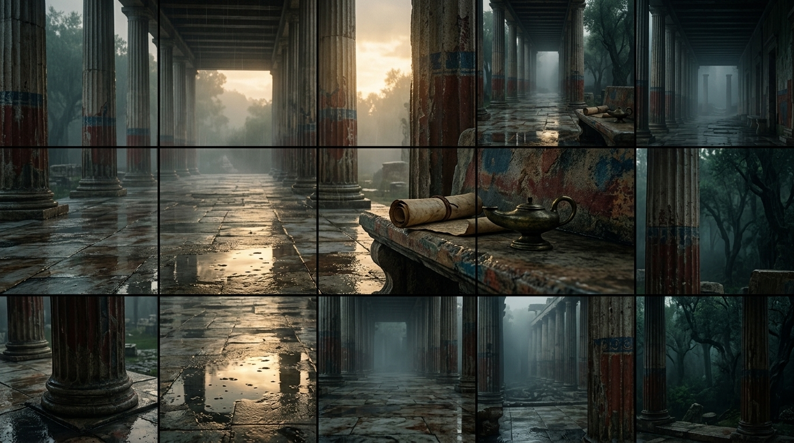

مدخل شامخ إلى الرواقية: أصول وركائز الفلسفة الخالدة
دراسة موسعة تناقش نشأة الرواقية، ثلاثية الفيزياء والمنطق والأخلاق، والقلعة الباطنية لترسيخ الاتزان الذهني.
✍️ Hikma & Nour
⏱️ 16 min read (دراسة موسعة)
📜 Document V4 Premium

الرواق المزخرف (Stoa Poikilè) في أثينا حيث أُلقيت أولى دروس الرواقية.